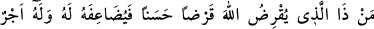
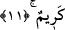
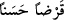
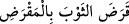

davrananlarla beraberdir.” (el-Ankebût 29/69) Böylece birincinin, yâni mücâhid
sâlikin sülûkü Allah Teâlâ’nın âyetlerine, âdet-i ilâhiye ve sünnet-i Rabbânîye uygun
olduğu halde ikincisi bu usûle uygun değildir. Öncelik ve sonralık bakımından ilâhî
tertîbde, en mükemmel îtibârla îtibâra şâyân olan ancak ve ancak âdetlere uyan ve ilâhî
sünnete uygun olandır. Müşâhedenin güzel aslına îtibarla ikisi de her ne kadar bir iseler
de, dereceleri ve değerleri bakımından farklıdırlar. Gerek mücâhede ve gerek müşâhede
ehli olan melekler şöyle derler: “Bizim her birimiz için, bilinen bir makam vardır.
Şüphesiz biz, orada sıra sıra dururuz.” (es-Saffat, 37/164-145) âyet-i kerîmesinde
ifâde buyrulduğu gibi o makamda saf bağlamışlardır. Üstâdımın el-Lâihatü’l-berkıyyat
adlı eserinde böyle kaydedilmiştir. Allah onun rûhunu cennette kılsın.
11. Kim Allah’a güzel bir ödünç verecek olursa, Allah da onun karşılığını kat kat
verir ve ayrıca onun çok değerli bir mükâfâtı da vardır.
“Kim Allah’a güzel bir ödünç verecek olursa,” İkrâz kelimesinin hakîkî mânâsı
karşılığı istenmek üzere mal vermektir. “
” ise onun mef’ûl-i mutlakıdır. En
güzel biçimde ödünç vermek demektir. Bu da infakta ihlâs ve samimiyettir. Yâni Allah
için vermek, malın en iyisini arayıp seçmek ve en faydalı yönde harcamaktır. Buna göre
âyetin mânâsı şöyledir: Karşılığının verileceğini umarak Allah yolunda malını harcayan
kimse Allah’a borç vermiş gibidir.
Keşfü’l-esrar’da denilmiştir ki: Sevaba müstehak olacak şekilde sâlih amel işleyen
kimse ödünç vermiş demektir. Bundan dolayıdır ki, Arablar “Eller ödünçtür”
demişlerdir. Azabı gerektirecek bir amel işleyen kimse de ileride cezâsını çekmek üzere
o kötülüğü borç vermiş demektir. Bu sebepledir ki, Allah Teâlâ “güzel ödünç” buyurdu.
Çünkü isyan kötü borçtur. Ümeyye şiirde şöyle demiştir:
İyiliğe bulaştırma kötülükleri
Çıkar üstünden günahtan elbisesini; arınıp kurtul ondan
Verilir elbet herkese borcunun karşılığı güzel ya da çirkin
Verilen borç gibidir; alınacak her karşılık
Karzdan/borçtan maksadın sadaka olduğu da söylenmiştir. Burada bir başka yön daha
vardır ki, aslında karz kesmek demektir. Çünkü Araplar, “
” yâni
elbiseyi makasla kesti derler. Sonra kişinin malından kesip bedelini geri almak şartıyla
vermesinin adı karz olmuştur. Buna göre âyette karz-ı hasen lafzı mef’ûlü bih olup,
mânâ şöyle olur: Allah’a güzel, yâni helâl ve temiz malını ödünç olarak verecek